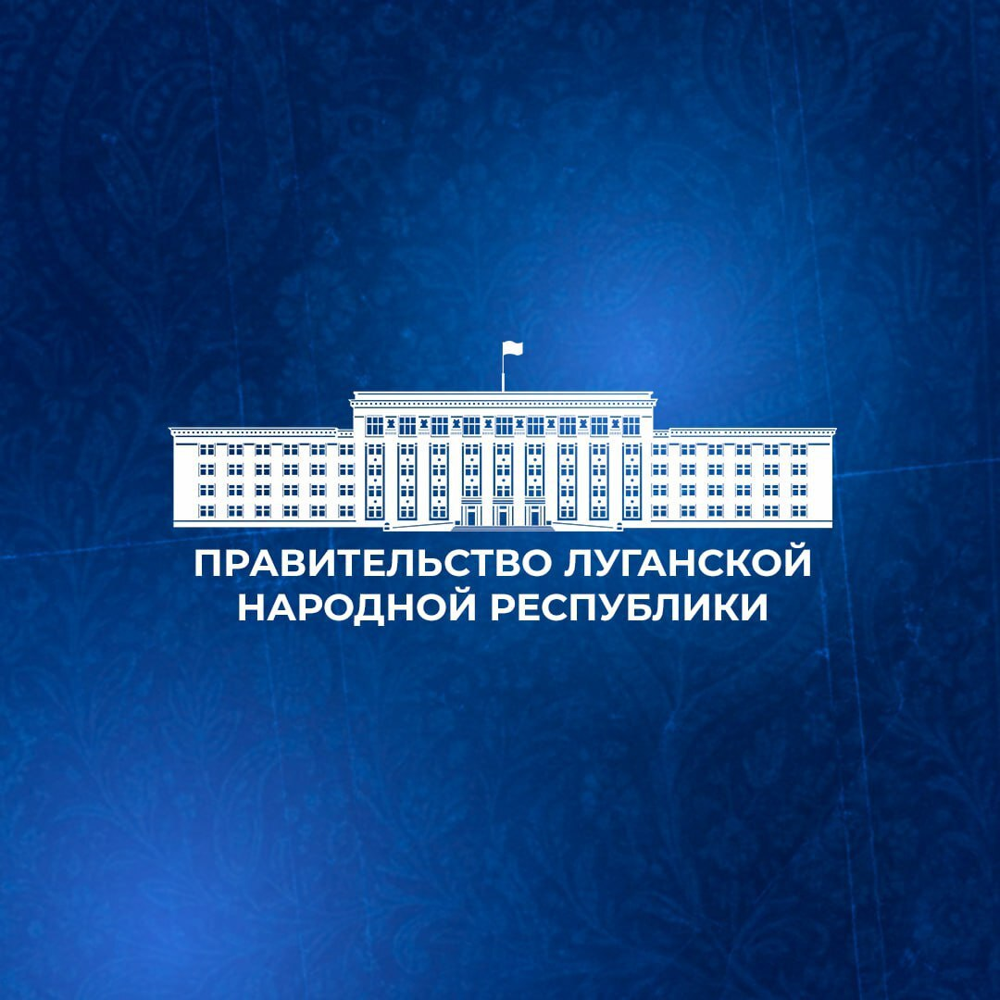
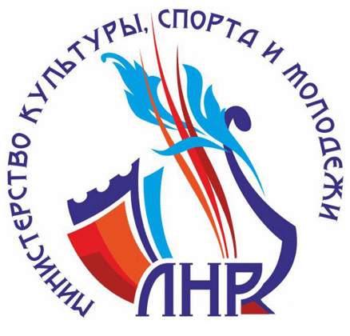
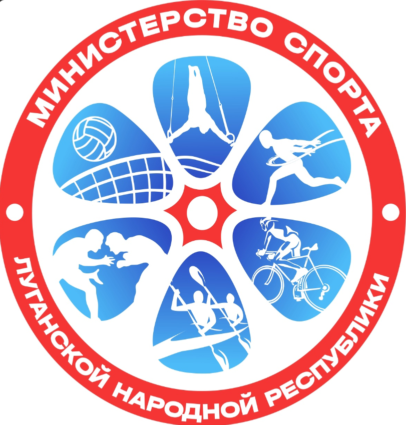
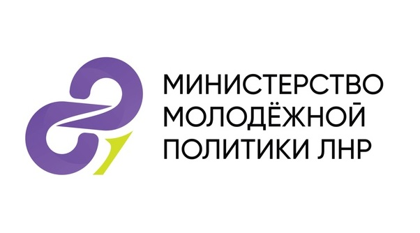

Поручения в работе↑ 12%
0
загружено в систему
ЛУГАНСКАЯ НАРОДНАЯ РЕСПУБЛИКА
Единое цифровое пространство для работы Советов: от повестки и протокола до исполнения поручения и публикации результата.



Культура
Спорт Образование и наука
Образование и наука
Молодежная политика«Решение обретает ценность, когда становится действием.»ПРИНЦИП РИТМ
«Общий ритм превращает отдельные усилия в результат.»ПРИНЦИП РИТМ
СОБЫТИЯ ПЛАТФОРМЫ
Последние изменения в протоколах и медиа-мастерской.
РАБОЧИЙ КОНТУР
Главное по решениям Советов — в одном рабочем ритме.
РАБОЧИЙ КАЛЕНДАРЬ
Заседания, документы и материалы Советов.
Выберите дату с заседанием, чтобы открыть связанные документы.
Появятся после загрузки конкретных поручений.
Поручения появятся после загрузки или создания конкретных записей.
Последние 6 месяцев
Единый ритм публикаций
Материалов пока нет.
Обзор обновляется по мере загрузки и создания конкретных поручений.
ОРГАНИЗАЦИОННАЯ ИНФОРМАЦИЯ
Сведения о составе, задачах и работе Советов. Информацию можно редактировать вручную.
КОНТРОЛЬ ИСПОЛНЕНИЯ
Просроченные поручения находятся сверху, затем текущие и исполненные.
РАБОЧИЙ ДОКУМЕНТ
Подготовьте ответственного, срок и поручения отдельно для каждого Совета. Данные сохраняются в браузере и автоматически отображаются в его сводном протоколе.
РАБОЧИЙ ЦИКЛ
Показаны все поручения.
СРОКИ ПОРУЧЕНИЙ
Данные автоматически загружаются из списка поручений. Дату и статус можно изменить вручную.
Выберите дату, чтобы открыть поручения.
ОТКРЫТЫЙ СБОР ВОПРОСОВ
Одно обращение одновременно наполняет повестку и проект резолюции протокола.
Предложения к повестке выбранного Совета
ПОВЕСТКА ДНЯ
Документ обновляется при каждом поступившем предложении. Исключенные при фильтрации пункты в выгрузку не попадают.
ПО КАЖДОМУ СОВЕТУ ОТДЕЛЬНО
Вопросы, докладчики, резолюции, сроки и ответственные собираются в единый рабочий документ.
СВОДНЫЙ ПРОТОКОЛ ЗАСЕДАНИЯ
Сюда автоматически добавляются данные со страницы «Проект решений». Ниже также собраны все включённые предложения этого Совета.
Загрузите запись для подготовки черновика протокола с помощью AI.
Файл не прикреплён
Аудиозапись будет сохранена вместе с выбранным Советом.
Это рабочий сводный проект по выбранному Совету. Он хранится только в этом браузере и не является утверждённым протоколом.
ЕДИНЫЙ ИНФОРМАЦИОННЫЙ РИТМ
От подтверждённого результата поручения до согласованной публикации и мониторинга новостей.
Заполните сведения слева
В промышленной версии общий доступ должен работать через защищённый сервер, роли пользователей и журнал изменений. Текущий прототип не обеспечивает сетевое совместное редактирование.
Для реального автоматического наполнения необходимо настроить на сервере RSS/API официальных ресурсов четырёх министерств. Ниже показана структура ленты без вымышленных новостей.
Автоматическое обновление начнётся после подключения официальных источников.
ДАННЫЕ ДЛЯ РЕШЕНИЙ
Показатели, которые помогают управлять процессом, а не отчетностью.
Созданные и загруженные поручения
Исполнено 0 из 0
Материалы, переданные на редактирование
Сигналы, которые стоит обсудить на ближайшем Совете
Данных пока нет. Показатели появятся по мере работы платформы.
БЫСТРОЕ ДЕЙСТВИЕ
Система проверит формулировку и сразу добавит задачу в цикл исполнения.
ПОРУЧЕНИЕ
Карточка содержит текущие сведения по поручению. Изменение статуса в прототипе отображается в списке до перезагрузки страницы.
Комментарии редакции